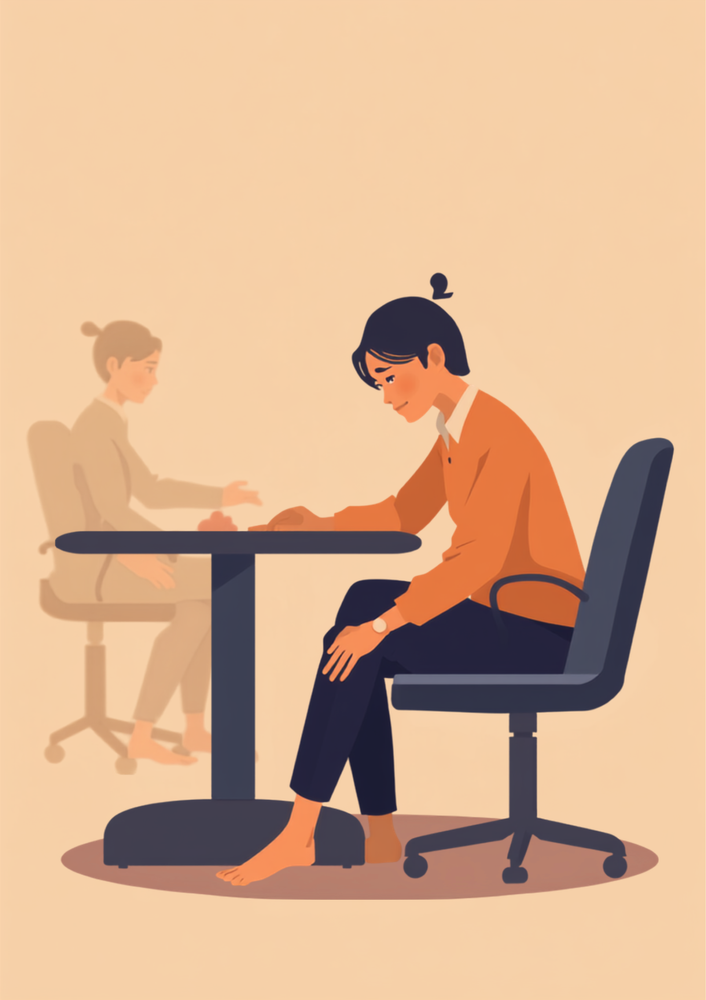
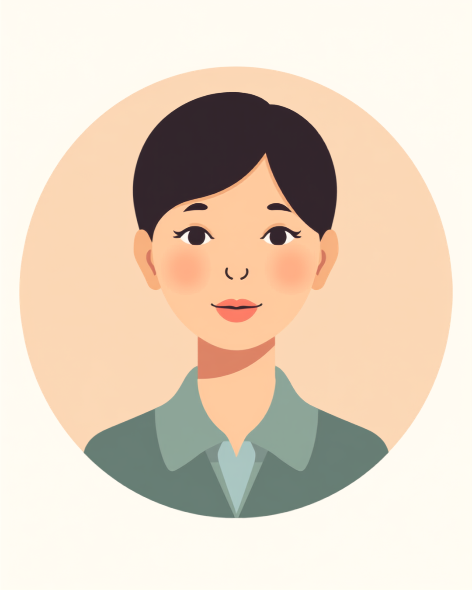

「貧乏ゆすり、やめて」と言われるたびに、いたたまれなくなる
就労支援の現場で関わってきた中で、この症状を抱える方から繰り返し聞いてきた言葉があります。「じっと座っているのがつらくて、気づいたら脚を動かしていて、それを貧乏ゆすりだと思われるんです」というものです。むずむず脚症候群は外見からはまったく分からない症状であるぶん、周囲には「落ち着きのない人」「癖の悪い人」という印象だけが残ってしまいやすいという難しさがあります。
本人にとっては、我慢すればするほど不快感が強まっていくつらい時間でもあります。それでも会議室や電車の中では、大きな動きを見せるわけにもいかず、なるべく目立たないように、机の下でそっと足首を動かしたり、膝を押さえたりしながらやり過ごそうとする方が多いようです。結果として、「単に落ち着きがないだけ」という周囲の印象と、本人が必死にこらえている衝動との間に、大きなずれが生まれてしまいます。
「営業職なので普段は外回りが多いんですけど、月1回の本社での定例会議だけは1時間ノンストップで座りっぱなしなんです。3年くらい前から、会議の後半になるとどうしても脚がむずむずしてきて、気づくと貧乏ゆすりみたいになっちゃうんですよね。ある日、部長に会議中『貧乏ゆすり、うるさいからやめてくれる?』って言われて、正直めちゃくちゃ恥ずかしかったです。癖じゃないんです、って喉まで出かかったんですけど、その場でうまく説明できなくて。結局その日は一言も言い返せずに、家に帰ってから一人でモヤモヤしてました。」

夕方から夜にかけて強まる、デスクワークや通勤との相性の悪さ
むずむず脚症候群の症状は、安静にしている時間が長いほど、また夕方から夜にかけて強まりやすいとされています。そのため、長時間のデスクワークや会議、電車での通勤、映画館や飛行機のように身動きが取りにくい場面は、症状が出やすい代表的なシーンといわれています。長く座っている生活そのものがリスク要因のひとつとして紹介されている記事も見られます。
このように「動く」「我慢する」「離席する」のどれを選んでも、何らかの形で気を遣うことになるのがこの症状の厄介なところです。だからこそ、その場でとっさに対応するのではなく、あらかじめ周囲に状況を伝えておくことが、負担を減らす有効な方法のひとつになります。
「デスクワークなので基本ずっと座ってるんですけど、夕方4時を過ぎたあたりから脚の奥がむずむずしてきて、集中力がガタ落ちするんです。最初は自分がただの飽き性なんだと思ってたんですけど、半年くらい経ってもずっと同じパターンで。ネットで調べて内科を受診したら、血液検査で鉄が足りてないことが分かって、鉄剤を飲み始めたら3ヶ月くらいでだいぶ楽になりました。もっと早く病院行けばよかったって、正直ちょっと後悔してます。」
職場にどう伝える、癖ではなく治療が必要な症状として
むずむず脚症候群は、見た目には分からず、症状名を聞いてもピンとこない人が多いというのが実情です。何も伝えないままでいると、「貧乏ゆすりが多い人」「落ち着きがない人」という印象だけが積み重なってしまうことがあります。とはいえ、症状の仕組みをすべて説明しようとすると、かえって伝わりにくくなることもあるようです。
具体的な場面に絞って伝えるという考え方
病名や医学的な仕組みまで詳しく説明する必要はないとされています。業務に関わる具体的な場面だけに絞って伝える方法が、双方にとって負担が少ないといわれています。
- 「長時間座ったままの会議のときは、脚を少し動かすことがあります」
- 「離席するときは体調のためなので、気にしないでください」
- 「貧乏ゆすりに見えるかもしれませんが、治療中の症状で、癖ではありません」
- 「静かにできる範囲で工夫しているので、指摘の前に一声かけてもらえると助かります」
信頼できる上司や人事担当者に、業務に関わる範囲でまず共有し、そこからチーム内に必要な情報だけ広げてもらう、という進め方をとっている方もいるようです。特に長時間の会議や研修が多い職場では、事前に伝えておくことで、席の配置や休憩のタイミングを配慮してもらいやすくなったという声も聞かれます。
使える制度と、一人で抱えないための相談先
何科に相談すればいいか
まずは内科や総合内科を受診し、鉄欠乏や腎機能の状態など、原因になりやすい要因を調べてもらう方法があるとされています。症状が続く場合は、神経内科や睡眠を専門とする医療機関を紹介してもらえることもあるようです。血液検査で鉄の状態（フェリチン値など）を確認したうえで、鉄剤の補充から治療を始めるケースもあるといわれています。
障害者手帳という選択肢
むずむず脚症候群単体で身体障害者手帳の対象になるという明確な基準は、現時点では一般的に紹介されていません。原因になっている疾患や、不眠が続くことによる二次的な心身の不調がある場合には、それぞれの状態に応じて手帳や制度の対象になり得るとされています。詳しくは主治医や自治体の障害福祉窓口に確認するのが確実です（2026年8月時点の情報です）。
相談できる窓口
- 主治医・内科／神経内科（症状の記録や検査、働き方についての相談）
- 職場に選任されている産業医（50人以上の事業場に選任義務あり）
- 自治体の障害福祉窓口（手帳や制度の対象になるか相談できる窓口）
- 就労移行支援事業所（体調管理を含めた就労準備や職場との調整）
よくある質問
関連記事
この記事に、聞いてみたいことはありますか？
「自分の場合はどうなんだろう」と思ったことを、気軽に書いてみてください。いただいた質問は個別にお返事したうえで、匿名で記事にすることがあります。
mimemime代表。就労支援の現場経験をもとに、障がいのある方の働く不安に寄り添う記事を執筆。